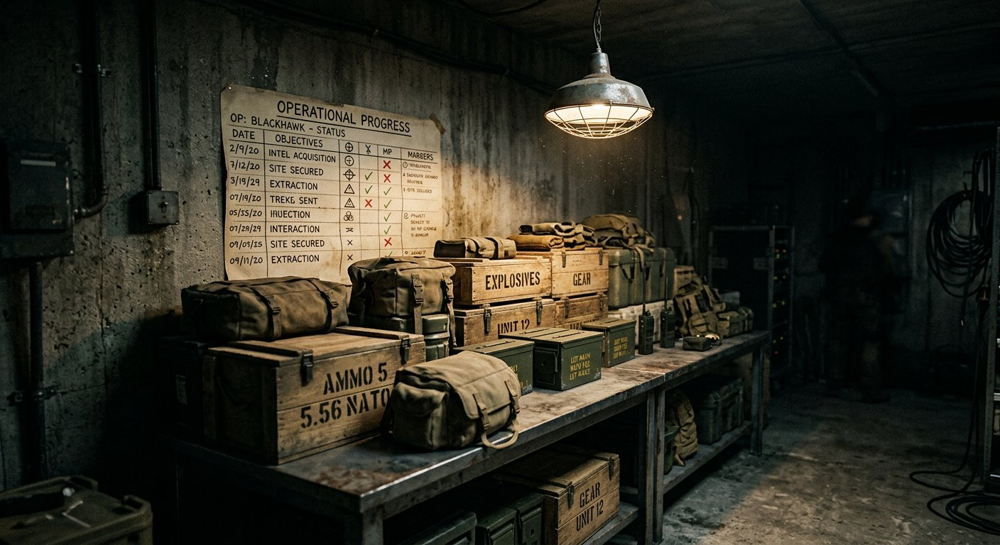

Monter un compte, pas seulement un niveau
Une bonne partie du jeu se passe hors des raids : les missions de département, les améliorations du site noir et le rangement de la cache décident de ce que tu pourras emporter dans six semaines. C’est moins spectaculaire qu’un duel gagné, et beaucoup plus rentable.
Les missions de département, source de tout
Chaque département propose une liste de missions avec ses propres récompenses : de l’argent, de l’expérience, des armes, des munitions, parfois des réparations d’équipement. Une seule mission peut rapporter l’équivalent de plusieurs raids ratés, pour un temps de jeu souvent plus court.
La bonne méthode consiste à prendre plusieurs missions en même temps et à les faire converger dans la même partie. Certaines se valident dans les menus, acheter un objet, en envoyer un, déposer une ressource, et n’ont pas besoin d’un raid. Les autres se font en jeu, et la difficulté vient de les combiner sans se disperser sur la carte.
Il est inutile de viser les cent pour cent sur chaque département. Les missions qui rapportent de quoi remplir la cache et progresser vers les paliers de niveau utiles suffisent, surtout au début.
Le site noir, dans l’ordre d’intérêt
Le site noir regroupe les améliorations permanentes. Toutes ne se valent pas, et l’ordre dans lequel on les paie change vraiment le confort des raids suivants.
- La cache d’abord, et ses caisses de stockage : plus d’espace, c’est plus de ventes, plus de rotation, et moins de temps perdu à jeter des objets.
- Le centre de commande ensuite, parce qu’il augmente l’expérience gagnée et le nombre de ventes simultanées. Le nombre de ventes parallèles est la limite cachée de tous les joueurs qui gagnent de l’argent.
- Le champ de tir pour finir, avec un effet concret : tu deviens « chargé » plus tard, et surtout tu peux porter jusqu’à 88 kilos avant d’être encombré. Passé ce seuil, tu ne cours plus. Sur une carte à contrainte de poids, cette différence change des extractions.
- Le centre de contrôle vaut surtout pour le PvP : endurance maximale, récupération, et un peu de vitesse de déplacement.
Un détail de version : les plans de chargement se débloquent au niveau 35 d’Operations. Ils permettent de composer l’ordre des munitions dans le chargeur, quelques balles performantes en tête, puis une suite moins chère, et de changer de plan en cours de raid par le menu radial.
La cache et la valeur par case
Une cache pleine ne rapporte rien. La règle utile est la valeur par case : une barre d’or qui occupe une case et vaut cinquante mille sera toujours meilleure qu’un lot d’accessoires à cinq mille pièce qui prend cinq cases. Beaucoup de joueurs gardent des objets « au cas où » et se retrouvent à jeter du bon butin en fin de raid.
Un tri tous les deux ou trois raids suffit. Ce qui ne sert ni aux missions, ni au crafting, ni à un équipement que tu portes réellement part au marché ou chez le marchand.
Les tickets d’équipement
Les tickets donnent un kit complet gratuit, et ils s’obtiennent par les missions et les événements. Les laisser dormir est une erreur fréquente : un ticket utilisé est une partie gratuite, un ticket oublié est une ligne dans un menu.
Depuis Aurora, leur composition a changé. Le ticket d’élite « équilibré » propose désormais le MCX LT et l’AN-94, quand le ticket « puissance de feu » inclut un SR-25. Regarde le contenu avant de composer : le kit donné n’est pas modifiable à la marge.
Le passage en difficulté normale
Le seuil classique cité par les joueurs : savoir sortir vivant de Zero Dam en facile au moins huit fois sur dix. En dessous, la normale coûte plus qu’elle ne rapporte, parce que les joueurs y sont plus nombreux et mieux équipés.
Au moment de passer, deux changements comptent : la valeur du butin augmente, et la probabilité de croiser un joueur aussi. Le kit doit monter un peu, pas s’envoler. Un joueur qui garde le même équipement modeste mais améliore ses munitions passe souvent mieux le cap qu’un joueur qui s’achète une belle armure et tire des balles de base.
Voir aussi : l’économie d’un raid et la valeur des objets.
Quatre progressions qui ne partagent rien
C’est la confusion la plus fréquente, et elle coûte des semaines : le jeu fait monter quatre compteurs séparés. Le rang de Warfare monte en jouant les modes à objectifs, le niveau d’Operations monte en extrayant, le niveau d’opérateur monte par défis et non par expérience, et le niveau d’arme monte avec des jetons dédiés. Progresser dans l’un n’avance aucun des trois autres.
| Compteur | Ce qui le fait monter | Le raccourci utile |
|---|---|---|
| Rang de Warfare | Parties terminées, jeu d’objectif plutôt que farming de kills | Empiler les missions journalières d’entraînement avec une carte de mérite double : c’est le meilleur rendement par heure, sans condition de niveau. |
| Niveau d’Operations | Extractions réussies, objectifs de raid | Le seul compteur qui exige de sortir vivant. Un raid raté rapporte des objets, pas du niveau. |
| Niveau d’opérateur | Défis propres à chaque opérateur | Choisir les défis les plus faciles à chaque palier plutôt que celui qui donne le plus d’expérience : ce compteur ignore l’expérience. |
| Niveau d’arme | Jetons d’expérience d’arme uniquement | Les jetons s’appliquent depuis l’écran d’équipement, onglet progression. Les garder en réserve ne fait rien monter. |
Deuxième confusion, plus coûteuse encore : les jetons d’expérience d’arme ne se gagnent pas en jouant beaucoup, ils se gagnent en jouant régulièrement. Missions journalières, palier de passe de combat, défis d’événement temporaire et coffres de sélection d’armement récupérables depuis le menu des collections. Un joueur qui rate trois jours de missions journalières perd plus de progression d’arme qu’un joueur qui rate une session de trois heures.
Troisième point, qui concerne la saison en cours : les paliers du passe de combat sont plafonnés chaque semaine, autour de quinze niveaux. Empiler trente heures le dimanche ne rattrape donc pas une semaine vide. Le bon calcul est quotidien, pas hebdomadaire, et les fenêtres d’événement qui retirent ce plafond valent plus que n’importe quelle session ordinaire.
